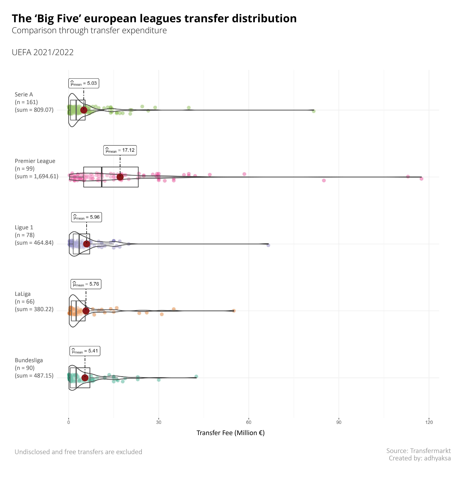
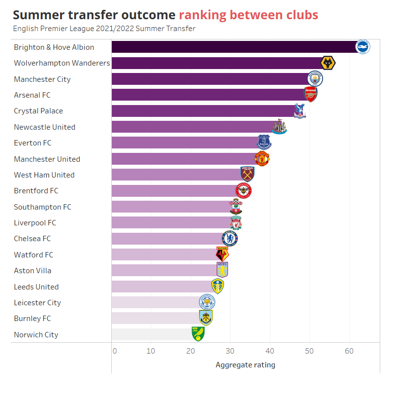
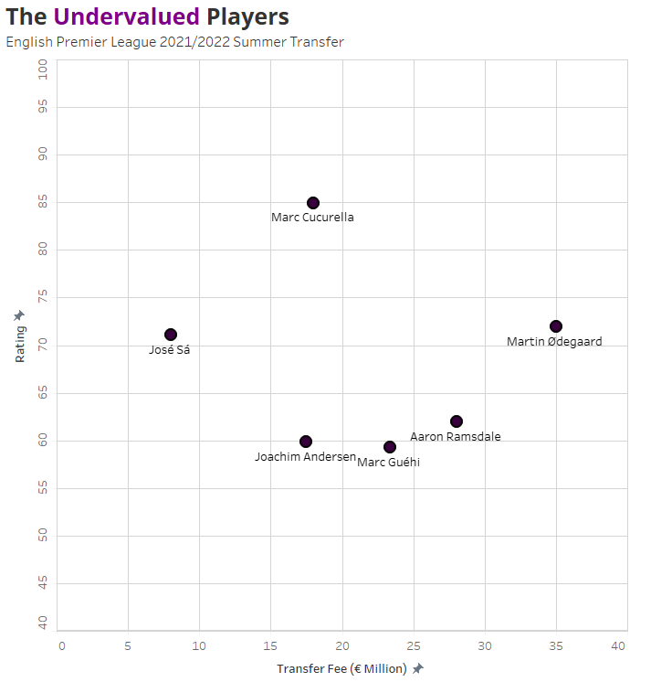
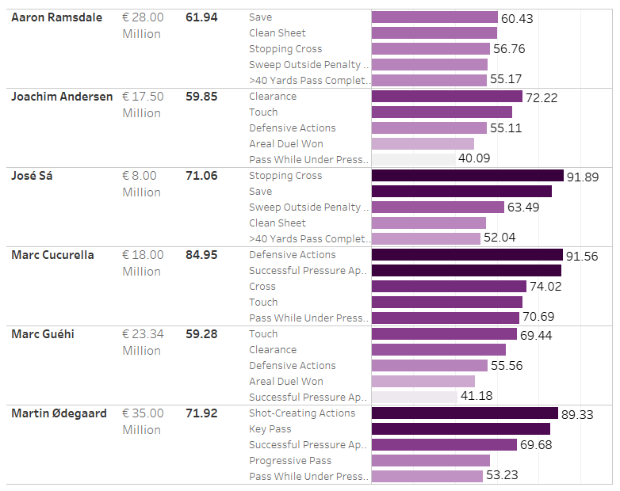
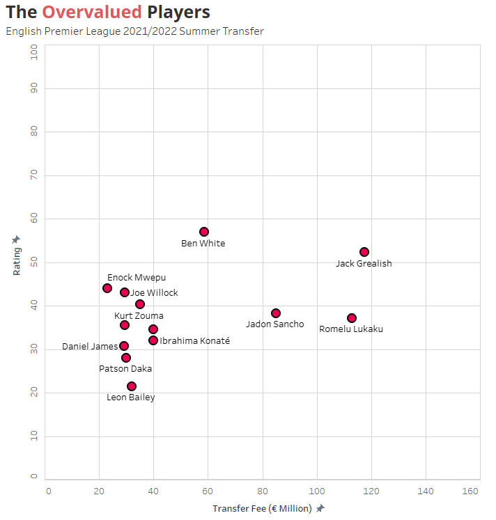
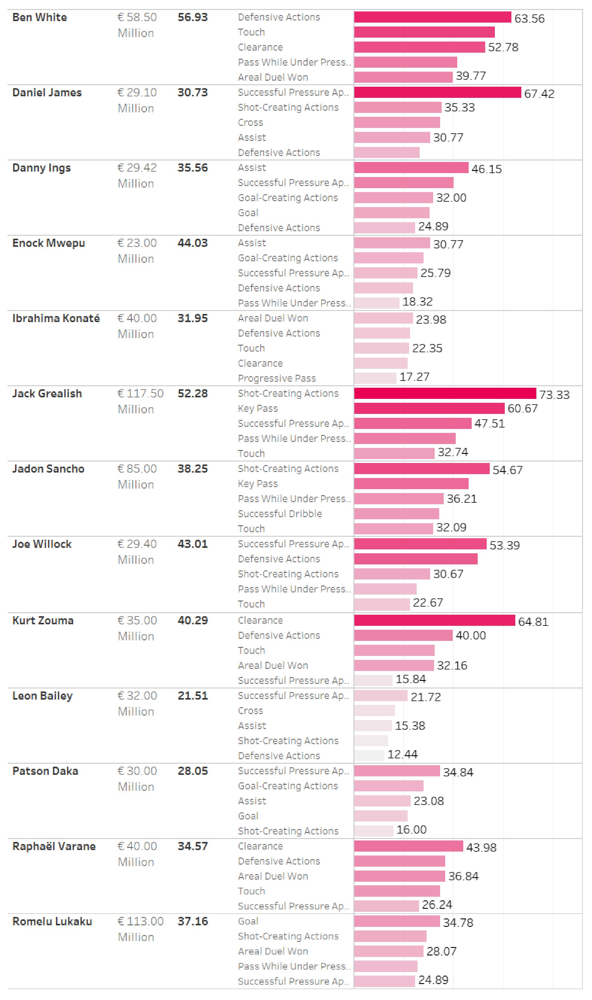
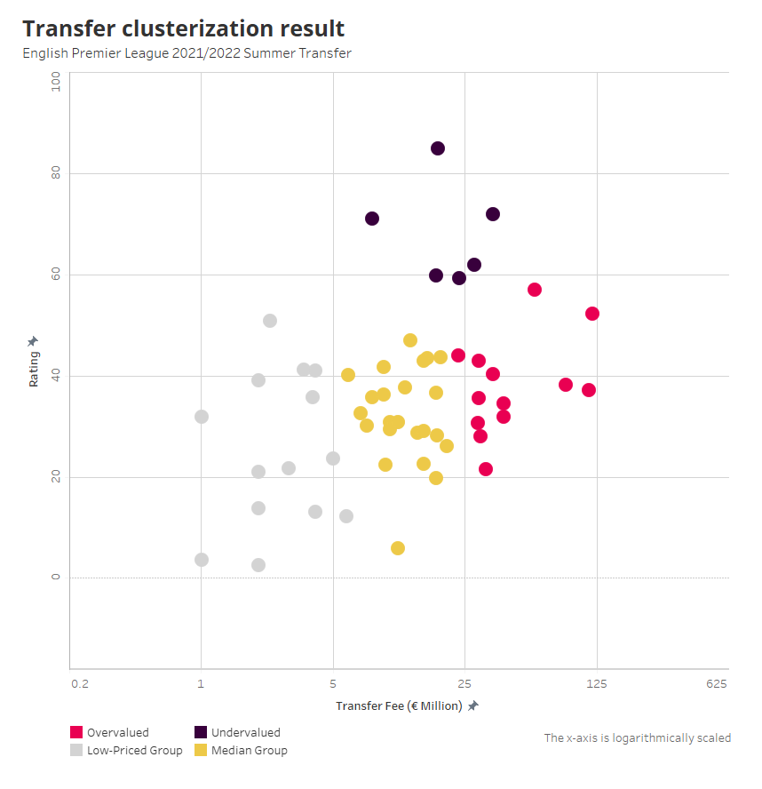
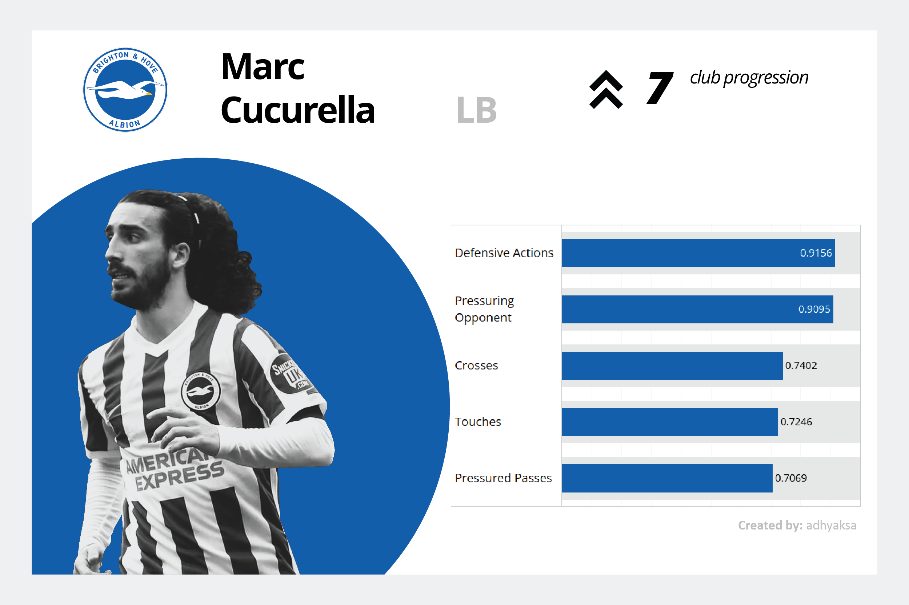
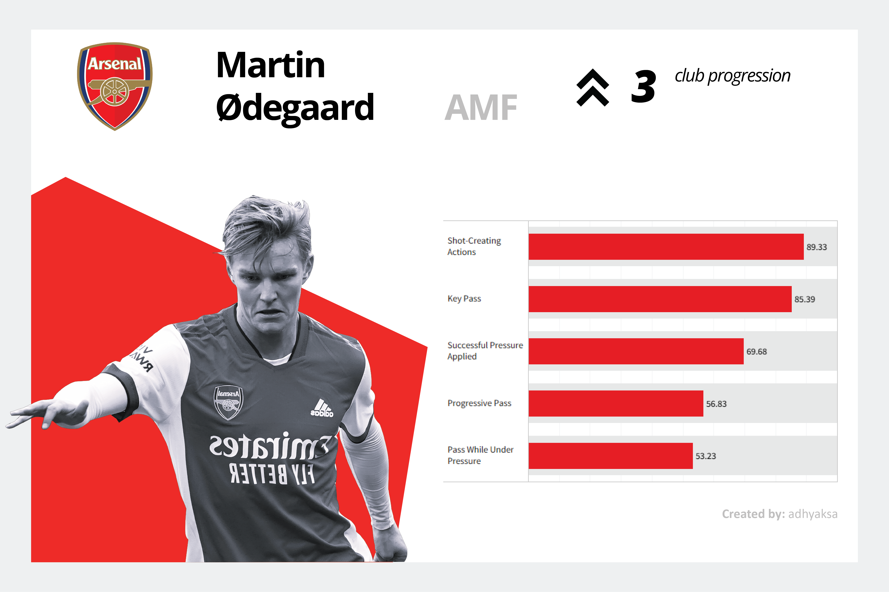
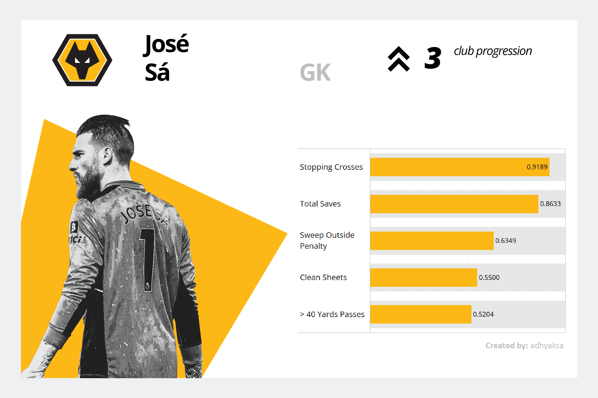

Finding Out Premier League Best Summer Signing: 2021/2022 Edition
Table of Content
Motivation
English Premier League (EPL) is undoubtedly one of the world’s most competitive football leagues. They created such an atmosphere by attracting superstars with strong CVs and young players with extraordinary talent, valuing them at very high prices.
According to the transfermarkt data, in 2021, Premier League’s transfer expenditure alone is reaching almost € 1.7 billion, double the value of Italy’s Serie A and almost quadrupling Germany’s Bundesliga. Unsurprisingly, a significant difference in the 2021/2022 transfer distribution can be noticed, as pictured in the violin plot below.

The average cost spent for EPL transfer is definitely greater than others, with € 17.12 Million per player. The fee spread for EPL is also wide-ranged, where they have an IQR of € 18.17 Million. Other leagues only ranged from 4.66 to 6.55 Million.
EPL’s sky-high transfer valuation makes me want to dig deeper into the transfer worthiness. Therefore, I choose EPL as my subject.
Approach and Tools
To calculate the individual rating of a player, I will combine and weight the player’s technical performance and contribution to the club’s progress. Ultimately, I will segregate the new signings into four groups using k-means to conclude the transfer result.
To calculate the player performance statistics and club progression, I will explore FBRef player statistics and league table data. Transfermarkt data will also be used to fill the player’s transfer fee.
I use Jupyter Notebook for python coding environment, and later tableau and ggstatsplot of R to visualize the findings.
Summary of comprehension:
| Comprehension | Technique | Tool |
|---|---|---|
| Data preparation | Create, Clean, Modify | Python (pandas) |
| Data manipulation & exploration | Normalization, Aggregation, Unit Conversion, Ranking, Pivot Table, Window Function, Statistical Measurement | Python (pandas, NumPy) |
| Data visualization | - | Tableau, R (ggstatsplot) |
| Reporting | Markdown language | Visual Studio Code |
More detailed calculations can be seen on my GitHub directory.
Insight Summary
Premier League summer transfer statistics and top 3 most expensive transfers
This season’s summer transfer in numbers:
| count | 73 |
| average | 18.32 |
| standard deviation | 21.80 |
| min | 0.30 |
| 25% | 5.20 |
| 50% | 11.10 |
| 75% | 23.34 |
| max | 117.50 |
The top 3 most expensive transfers:
| Club Destination | Player | Position | Club Origin | Fee (€ Million) |
|---|---|---|---|---|
| Manchester City | Jack Grealish | Left Winger | Aston Villa | 117.5 |
| Chelsea FC | Romelu Lukaku | Centre-Forward | Inter | 113.0 |
| Manchester United | Jadon Sancho | Left Winger | Bor. Dortmund | 85.0 |
Brighton won this season’s summer transfer
Brighton is a club that can immidiately reap benefits in terms of the performance of their new signings. Despite their low spending rank, they were able to progress into a better position. Brighton is an efficient spender.

The undervalued
There are six new signings who have had exceptional performances this season. Even four of them are transfered from other league.
Marc Cucurella recorded the best performance among the new players with a rating of 84.95. Cucurella was transfered from Getafe for just € 18 Million. The Left-Back managed to bring Brighton up 7 ranks.

Performance breakdown:

13 out of 73 new signings are considered failed to live up their price
Jack Grealish, the most expensive signing of the season, is categorized as an overvalued player. Similar with Grealish, Lukaku and Sancho’s performances are also considered failed to live up their price. Overall, 17.80 % of players are considered as overpriced.

Performance breakdown:

EPL’s summer transfer landscape
Below is the clusterization result of EPL 2021/2022 summer transfer:

Top 3 best signings
Below is the performance breakdown of the top three summer transfers of the season:



Footnotes
-
All of the calculations behind this post can be found here.
-
I use FBRef data for player performance and transfermarkt data for player transfer fee.